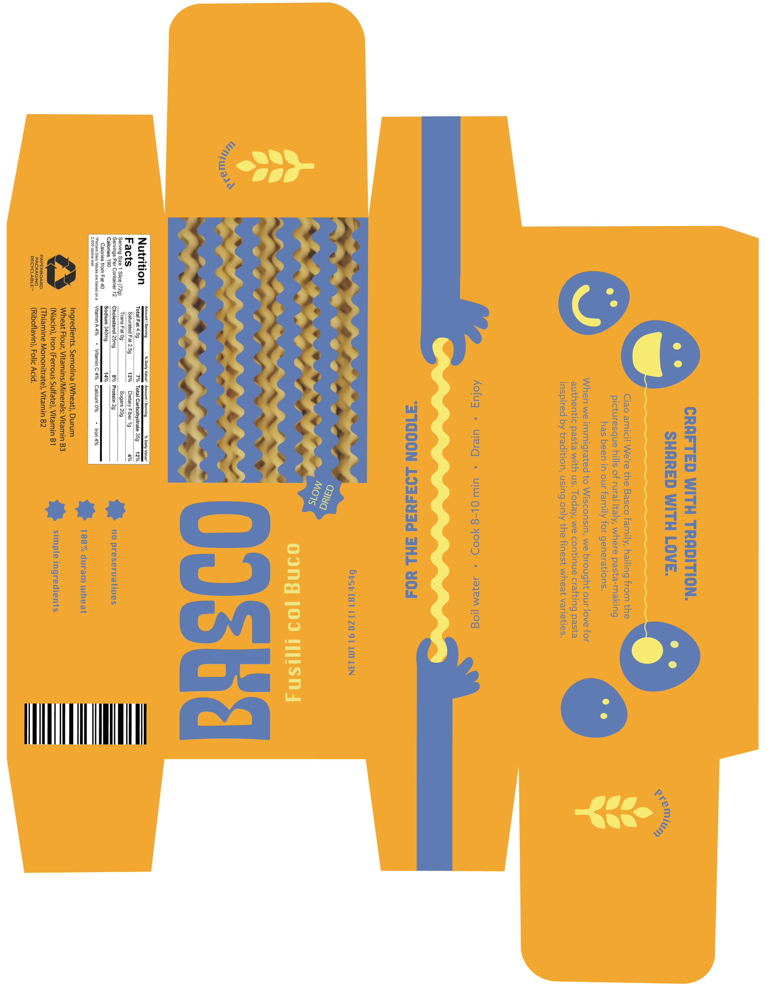

Basco
Packaging & Illustration • 2026
PRODUCT MOCKUP

Basco is a fictional pasta brand built around an illustration-forward identity that feels bold and grown-up without crossing into childish territory. The packaging uses a vibrant amber and cobalt blue palette, a custom logotype with a playful reversed letterform, and a die-cut window that lets the actual fusilli col buco noodles become part of the design. Illustrated hands holding pasta, smiley face characters, and a wavy noodle motif run across the box panels to create a world that rewards a closer look.
FULL PACKAGE DIELINE
